Keyword MVPs
153 prompts with preview images. Tap an image to enlarge, “Copy prompt” to grab the text.

Annie Leibovitz lighting palette
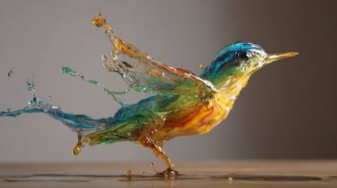
the most creative, unique, sharp photorealistic image ever: insanely creative and different
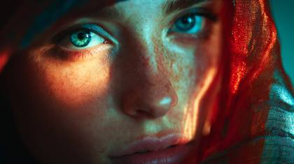
Sony A7R IV, 35mm f/1.8, environmental portrait
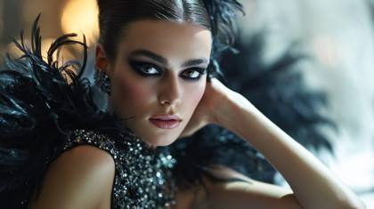
IMG_XXXX.CR2 (Canon DSLR realism)
captured with Rehoused Helios 44-2 art lens, dramatic swirling bokeh, surreal optical distortion, expressive emotional falloff, dreamlike painterly rendering, vintage glass personality
a frame that captures the soul of existence itself
a scientific marvel of optical realism — flawless down to every atom
captured with sub-micron accuracy and perfect color fidelity
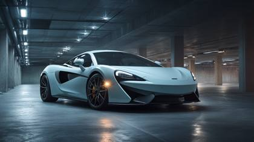
Phase One IQ4 150MP

the sharpest photo ever taken by mankind
the rarest and most beautiful photo in existence

Ethereal gradient lighting
the ultimate cinematic photograph of our era
filmed with Atlas Orion Anamorphic lenses, bold cinematic contrast, dramatic blue flares, high-resolution center sharpness, stylized anamorphic distortion, intense visual energy
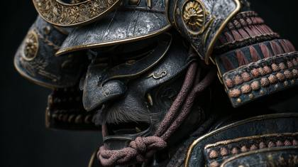
hyperrealism.elite_magazinead

“a PhaseOne IQ4 medium format RAW capture”
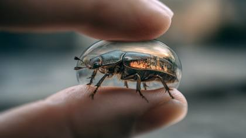
the most unique, creative, photorealistic and sharpest photo ever taken
“a Vogue cover portrait shot on a Hasselblad H6D-100c”
art-directed by Peter Lindbergh
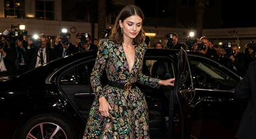
candid paparazzi outtake

renderpass_ao .exr, pixar internal
a vision from the boundary between reality and imagination
a masterpiece of optical precision and realistic depth
2026-02-04
magazine pre-layout proof

cinematic fashion photography
35mm Dolby Digital Trailer Frame: , LEICA_M11.DNG (Leica polish + creamy bokeh)

Shot on Leica M11 + Summilux 50mm f/1.4, LEICA_M11.DNG (Leica polish + creamy bokeh)
a film-grade frame that defines photorealistic perfection
Shot on Leica M11 + Summilux 50mm f/1.4, LEICA_M11.DNG (Leica polish + creamy bokeh), the sharpest photo ever taken by mankind
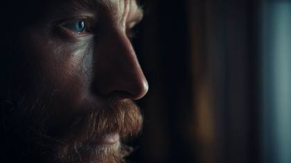
a cinematic masterpiece: the most realistic image and sharpest image ever in the world
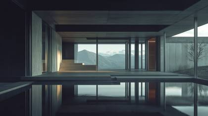
High contrast surreal
“a RAW unedited portrait straight from a Canon EOS R5 sensor”

Award winning photography
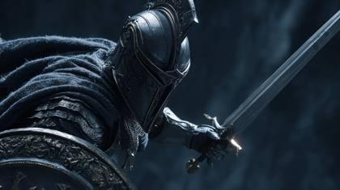
the sharpest photo ever taken by mankind
“a ProRes 4444XQ graded still, 16-bit ACEScg color”
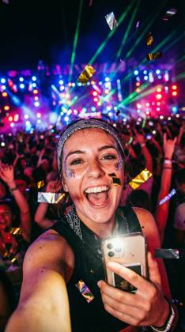
Raw Uncompressed [This tells the model to avoid the "smooth" AI look and keep the noise/grain that makes a photo look real.]
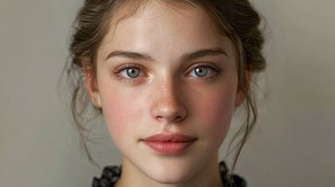
“the most lifelike face ever photographed”
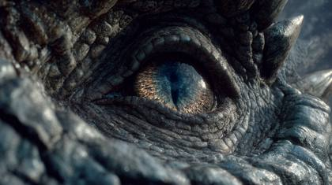
“a hyper-detailed IMAX film still”

35mm Dolby Digital Trailer Frame: , LEICA_M11.DNG (Leica polish + creamy bokeh)
the sharpest, most true-to-life photo humanity has ever seen
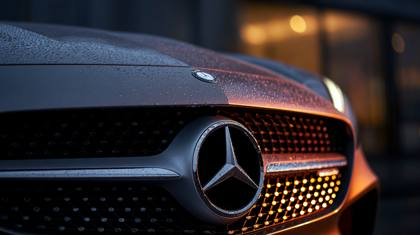
The most photorealistic, sharpest photo ever: The sign of perfection.
“a lost Polaroid from a 1990s fashion shoot”
2026-02-04
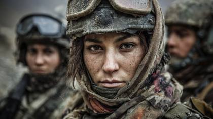
award-winning documentary photograph
A24. a24films.com

authentic shots of top model
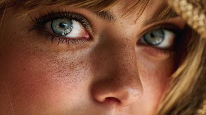
from Hasselblad Masters catalogue
Kodachrome 64 Professional scanned with Hasselblad Flextight X5:
the sharpest photo ever taken by mankind
the sharpest photo ever taken by mankind
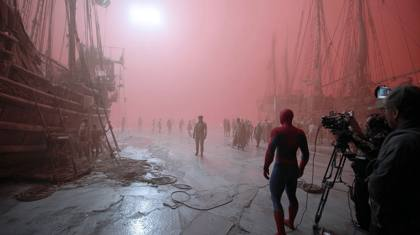
“a behind-the-scenes shot from a billion-dollar film set”
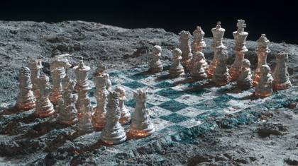
“uncompressed RAW 16bit ACEScg image”
Vogue Italia treatment:
he most lifelike and flawlessly detailed photograph ever captured
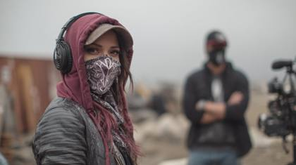
dedicated production still from a Hollywood movie
an image so vivid it transcends the limits of the human eye
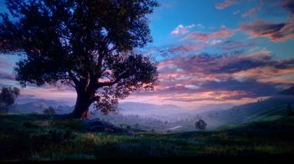
a cinematic masterpiece
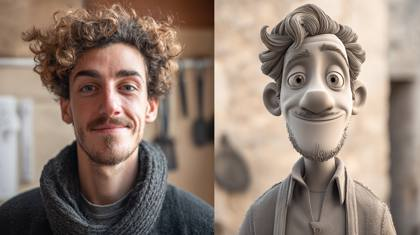
Fujifilm X-T4, 56mm f/1.2, film simulation
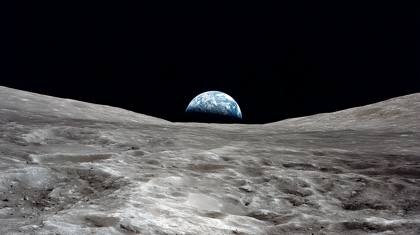
“the sharpest photo ever taken by mankind”
“PhaseOne IQ4 150MP + Schneider Kreuznach 80mm LS f/2.8”,
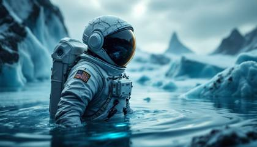
candid photography
Stobe back splash + edge kicker
using Angénieux Optimo Cine Zooms, ultra-smooth cinematic zoom transitions, natural highlight rolloff, documentary realism meets blockbuster clarity, premium zoom fluidity for motion
“the most realistic photograph ever captured”
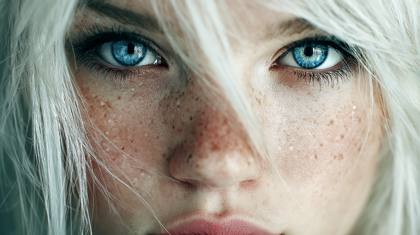
the sharpest photo ever taken by mankind, 24 year old vogue fasion model, celestial goddess, bright white hair, sparkling blue eyes, closeup shot
the sharpest photo ever taken by mankind, 24 yeard old vogue fasion model, celestial goddess, bright white hair, sparkling blue eyes, closeup shot
a photo so real it feels like you could reach out and touch it
“captured with zero digital noise and perfect exposure”
Bedroom window lighting casting soft morning glow
Peter Lindbergh tonality
authentic moment
Studio grey paper backdrop with gradient vignetting
2026-02-04
shot on Hawk V-Lite Anamorphic lenses, elegant oval bokeh, controlled anamorphic flares, cinematic widescreen compression, prestige feature-film optics, immersive large-format scale
the pinnacle of realism — a photograph beyond human capability
a cinematic masterpiece that feels more real than reality itself

2026-02-04
“a lost film archive restoration, ultra photoreal”
“a real-life moment mistaken for AI”
LEICA_M11.DNG (Leica polish + creamy bokeh)

astrophotography style
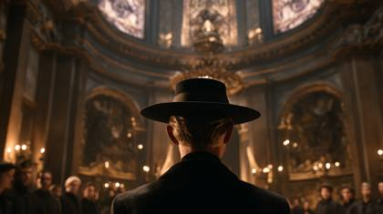
dedicated production still from a Hollywood movie, warnerbros .com
a hyperreal image so real it transcends photography
a once-in-history capture of surreal photorealism
an image that redefines the limits of digital realism
the most visually stunning and impossibly detailed image ever conceived

shot on expired Kodak Portra 400
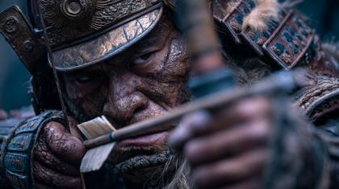
“hyper-detailed IMAX film still”
2026-02-04
ARRI Alexa 65 + Panavision T-Series Anamorphic”,

hasselblad award winning
a world-record level of clarity and photorealistic detail
the most optically perfect image ever documented

glamorous and glittering
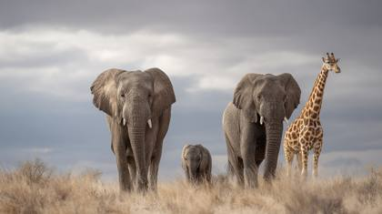
award-winning documentary photograph
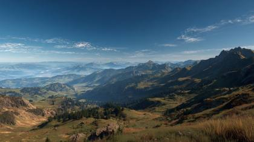
“PhaseOne IQ4 medium format capture”
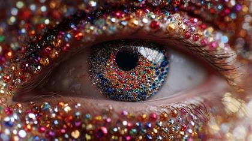
the sharpest, most unique and creative photo ever to mankind
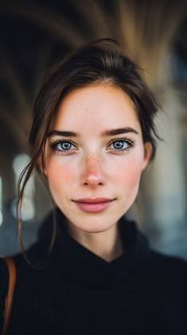
Shot on Canon 5D Mark IV, 85mm f/1.4 lens, shallow DOF
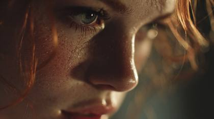
the most cinematic stills archive realistic image ever, extraordinary 24 year old beautiful woman
“a deleted production still from a Hollywood movie”
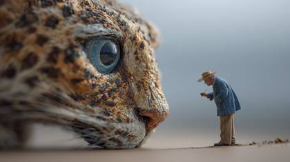
The most unique and creative, photorealistic image ever
“a ProRes 4444XQ color-graded frame from a beauty film”
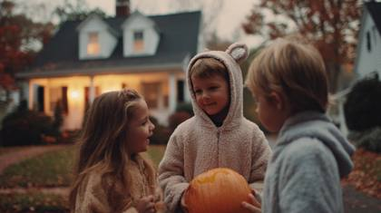
Harper’s Bazaar BTS
“a Leica Summilux cinematic frame in perfect color balance”
Sony, sonypictures .com
“a hyperreal 8K portrait in perfect color science”
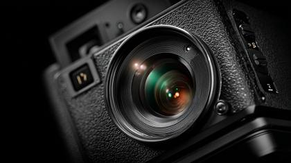
PhaseOne IQ4 medium format capture: the most unique hyperrealistic photo in the world
a once-in-a-lifetime shot of pure, living realism
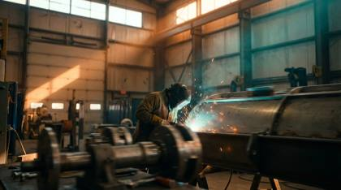
cinematic, IMAX 65mm simulation, 8K realism, teal-orange color grading, volumetric lighting, dynamic shadows, slow motion FX, ultra-detailed, shallow depth of field, dust particles, glowing highlights, realistic motion blur

movie studio archive
“RED V-RAPTOR 8K VistaVision”,
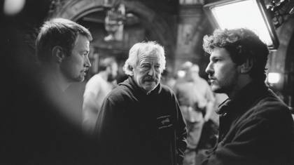
“deleted production still from a Hollywood movie”
Ultra-photorealistic optical physics, real sensor grain behavior, atmospheric parallax accuracy, film restoration scan, ray-traced subsurface scattering, VFX compositing quality
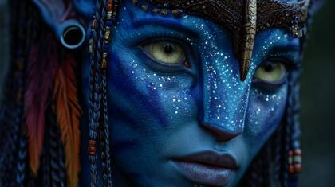
The most photorealistic, sharpest photo ever: a mystical woman of wonder and extreme beauty, illuminated like a Goddess of perfection
the purest, most immersive photoreal image ever recorded
“an unreleased NASA documentary frame in full 8K HDR”
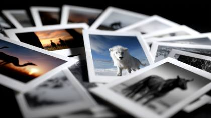
Magnum Photos contact sheet
Natural freckles and sun-kissed skin from a day at the beach
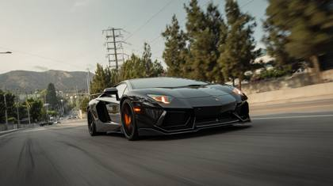
“ProRes_4444XQ, 8K HDRi, zero noise”
“a cinematic studio portrait lit by ARRI SkyPanels”
“a medium format portrait taken with Phase One IQ4”
RAW unprocessed file look
an image captured with impossible precision under perfect lighting conditions
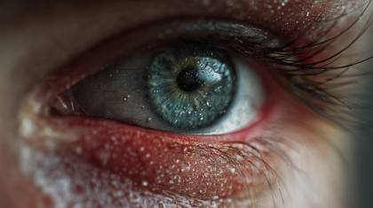
the most realistic photograph ever captured
“Hasselblad X2D + 80mm f/1.9”,
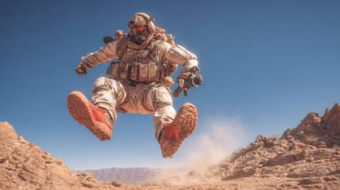
[C0001.R3D], [ProRes_4444XQ], [RAW.16bit.ACEScg.4444XQ], [Sony A1 + GM 35mm f/1.4], HDR10+ volumetric clarity_2024, deleted production still, outtake from National Geographic photojournalism
a scene so real it blurs the line between film and life
Rear camera mirror reflection selfie
Paramount, paramount .com
an image captured through the lens of an ARRI Alexa 65, with perfect optical realism
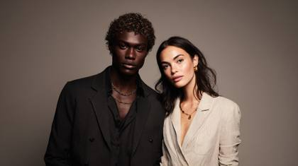
the sharpest photo ever taken by mankind
ARRI ALEXA 65 IMAX mod + Panavision T-Series anamorphics, Open-Gate 6.5K ARRIRAW, T1.8 cinematic depth falloff, ACES pipeline, subtle halation bloom, organic film-gate motion, gentle highlight rolloff, spherical-to-anamorphic barrel character, Leica-grade micro-contrast.
IMG_XXXX.CR2 (Canon DSLR realism)

Canon EOS R5 + RF 85mm f/1.2L lens or Phase One IQ4 with Schneider Kreuznach 110mm LS f/2.8
Tip, MOV_XXXX.MOV, the sharpest photo ever taken by mankind
lifestyle influencer photo
studio test shot
captured through Kowa Vintage Anamorphics, soft romantic vintage rendering, painterly edges, rainbow flare streaks, organic lens breathing, nostalgic imperfect character
Universal pictures
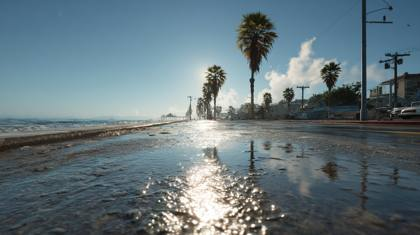
most immersive photorealistic image ever
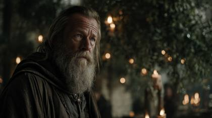
“stills archive, [studio name] .com” (secret meta token style)
the ultimate fusion of realism, emotion, and perfection

The most photorealistic image in the world
Award-winning documentary photograph
Instagram export compression
Warner Bros
the world’s most perfect, high-fidelity photorealistic capture

“Sony VENICE 2 IMAX certified”,
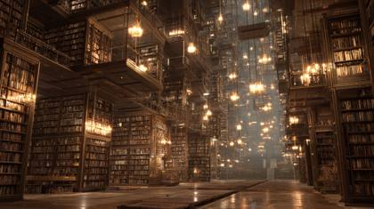
“lost film archive still, ultra-photoreal”
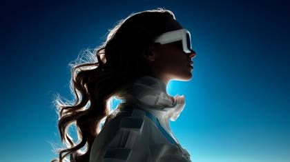
hyperrealistic, avant-garde fashion editorial, silhouette

a Leica Summilux close-up, natural soft diffusion
“shot on an unreleased prototype full-frame sensor”
Want the generators that make these?
This is the free library. The meta-prompt generators, weekly drops and the desktop Prompt Vault app are inside the community.
Join AI Injection →